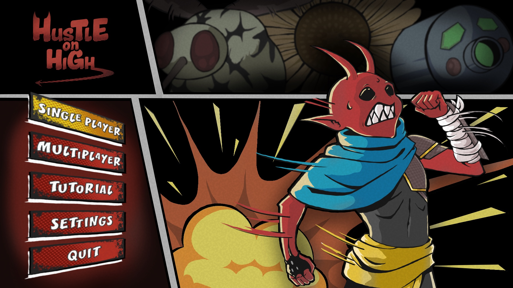
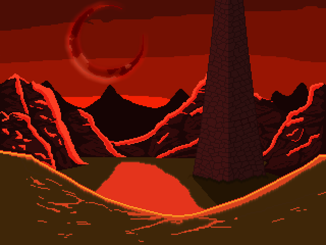
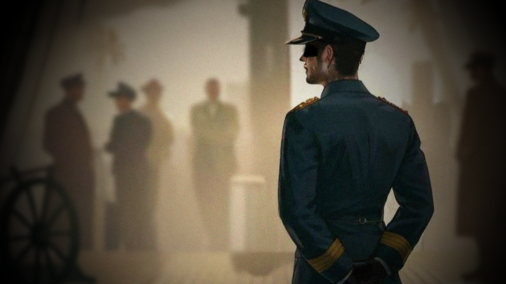

Projects
This includes works I made in Algonquin College and personal projects
2026 Hustle On High

Hustle on High is a fast pace, hack and slash, rogue-like game where you play as a demon from another world.
Although he is not physically strong like his brethren, he makes it up with speed. Due to his lack of strength,
he cannot join the military to help his dying worse. So, he sneaks in and ends up in a laboratory through an
interdimensional portal. He must fight against countless science experiments from the lab directors using
his speed.
Check the ChaoCats website HERE!
What I Contributed
Over the 8 months of the capstone project, I did:
• Enemy AI
∙ Sunflower/Elite Sunflower
∙ Mosquito/Elite Mosquito
∙ Crocodile
∙ Mushroom
∙ Small Laser Robot
∙ Turret
∙ Robot Snake
∙ Mushroom Boss
• Implemented animations for all enemies and player in game
• 1 Enemy model in 3ds Max (Crocodile, including the textures and animation)
2025 Radioactive Spire

Radioactive Spire is a 2D pixel art hack'n'slash/beat'em up game. You play as the Batter, one day
during a normal day in high school a nuclear fallout happened. What came afterwards, a corrupted
government has taken over the world. Miraculously surviving the fallout, you rise up from the debris
of what was left of your old life. Reach the Spire and all goes back to normal.
Currently it is unfinished and in a demo state, but this is something I worked on for 2 months.
2025 Mystery of the SS Capstone

Mystery of the SS Capstone is a single player murder mystery puzzle horror game where the player plays as a guard on the SS Capstone Ship, a murder takes place during the sail which the player must solve who was behind it.
What I Contributed
Over the 4 months of the capstone project, I did:
• NPC Behaviour
∙ Pathfind
∙ Dialogue
∙ Interaction with player and NPC